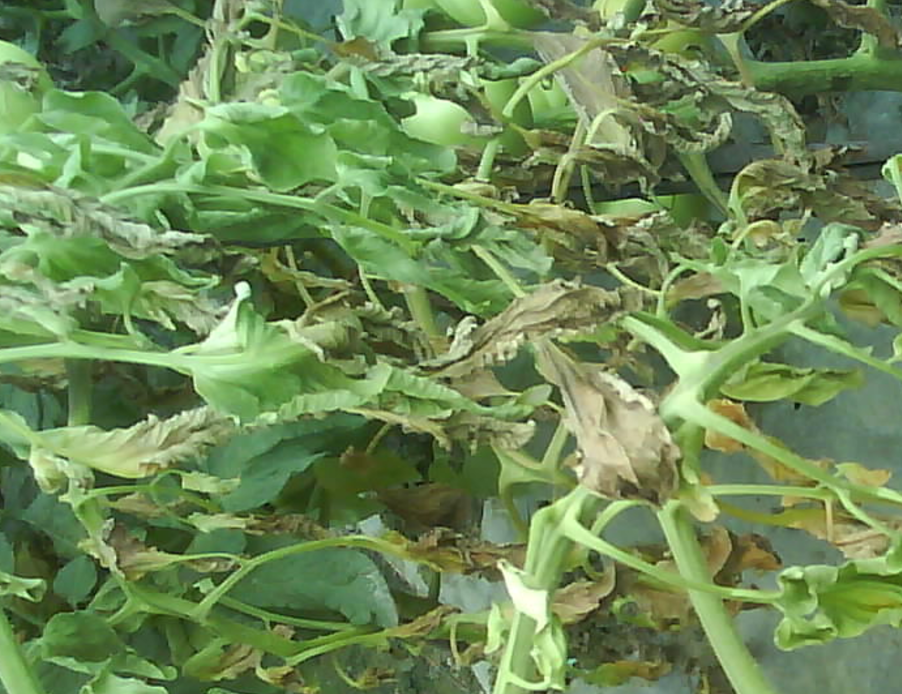

枯萎病

危害症状
又称萎蔫病、“发瘟”，是一种防治困难的土传维管束病害，常与青枯病并发。多在开花结果期发病，往往在盛果期枯死；发病初期，植株中、下部叶片在中午前后萎蔫，早、晚尚可恢复，以后萎蔫症状逐渐加重，叶片自下而上逐渐变黄，不脱落，直至枯死。有时仅在植株一侧发病，另一侧的茎叶生长正常。茎基部接近地面处呈水浸状，高湿时产生粉红色、白色或蓝绿色霉状物。拔出病株，切开病茎基部，可见维管束变为褐色。
病原形态特征
Fusarium oxysporum f.sp. Lycopersici Snyder et Hansen称番茄尖镰孢菌番茄专化型，属半知菌亚门真菌。分生孢子有大小两型：小型分生孢子卵形至长椭圆形，无色单胞，大小5－14×2－4.5um。大型分生孢子镰刀形或长纺钎锤形，无色，有2－3个分隔，多数为3个分隔，大小19－45×3－5um。病菌在马铃薯蔗糖培养基上，菌落白色至紫红色，除形厉大、小型的分生孢子外，并有厚垣孢子产生。厚坦孢子在菌丝上顶生或间生，圆形至椭圆形，单胞，黄褐色，大小11.2－15.0×9.5－11.2um。
发病因素
- 连作地，土质黏重、偏酸，土壤中积存的枯萎病菌多的田块。
- 土壤中有一定量的线虫等地下害虫，病菌从害虫危害的伤口侵入根部危害。
- 育种子带菌、育苗用的营养土带菌；或有机肥带菌，或有机肥没有充分腐熟，粪蛆危害根部，病菌从伤口侵入而危害。
- 氮肥施用过多，磷、钾不足的田块。
- 连阴雨后或大雨过后骤然放晴，气温迅速升高；或时晴时雨、高温
防治方法
- 移栽前或收获后，清除田间及四周杂草，集中烧毁或沤肥；深翻地灭茬、晒土，促使病残体分解，减少病源和虫源。
- 育苗的营养土要选用无菌土，用前晒三周以上。
- 轮作倒茬，重病田与十字花科、瓜类及葱蒜类等蔬菜实行3--5年轮作．如果种植黄瓜，必须用黑籽南瓜进行嫁接。
- 选用抗病品种，选用无病、包衣的种子，如未包衣则种子须用拌种剂或浸种剂灭菌。
- 育苗移栽，播种后用药土覆盖，移栽前喷施一次除虫灭菌剂，这是防病的关键。
- 选用排灌方便的田块，开好排水沟，降低地下水位，达到雨停无积水；大雨过后及时清理沟系，防止湿气滞留，降低田间湿度，这是防病的重要措施。
- 土壤病菌多或地下害虫严重的田块，在播种前撒施或沟施灭菌杀虫的药土。
- 施用酵素菌沤制的堆肥或腐熟的有机肥，不用带菌肥料，施用的有机肥不得含有本科作物病残体。
- 土壤深翻晒，并增施有机肥、磷钾肥，促使作物生长健壮，提高作物抗病能力。
- 及时防治害虫，减少植株伤口，减少病菌传播途径；发病时及时清除病叶、病株，并带出田外烧毁，病穴施药或生石灰。